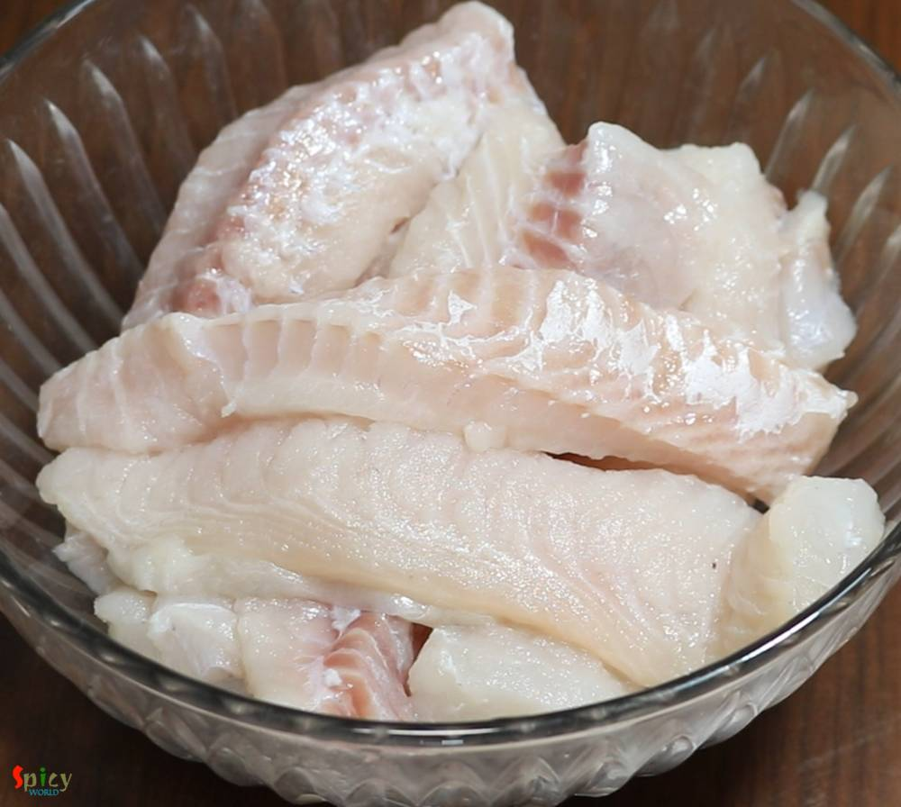
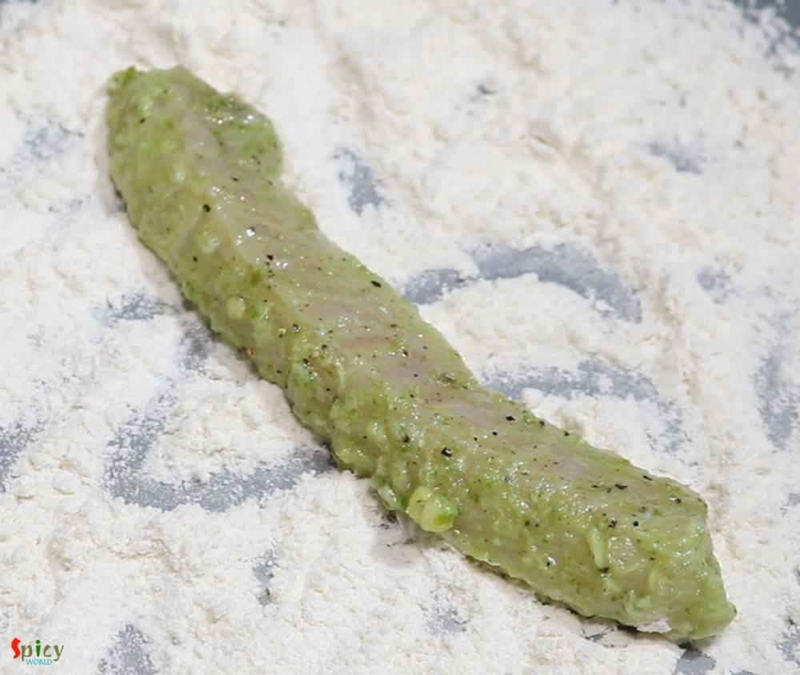
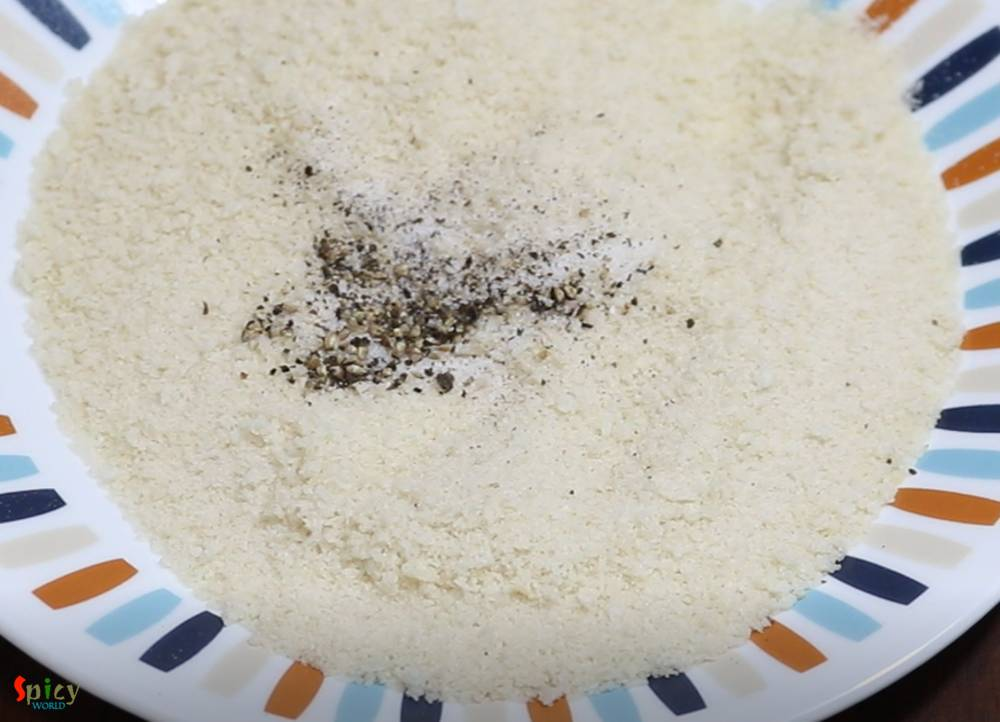
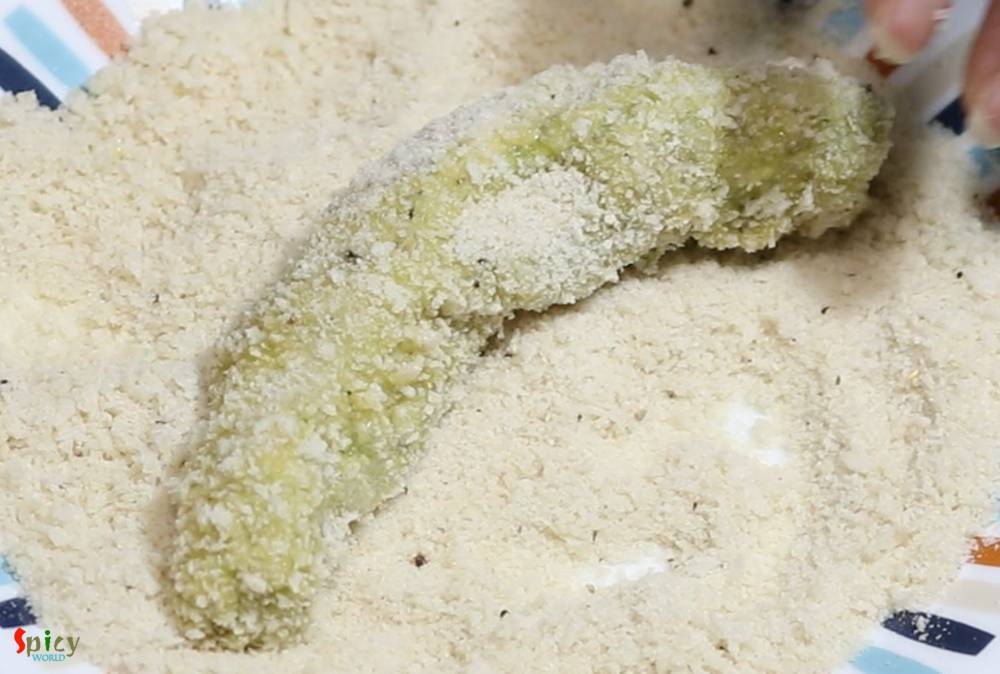

Simple and Easy Recipes
Fish Fingers (Kolkata style)
By Arpita © 2016 Spicy World
Feb 27, 2019
Feb 27, 2019

If you are a fish lover, then 'fish fingers' should be on the top of your list. These crispy, spicy fingers can steal your heart in one bite. In Kolkata, every street food center, college canteens, restaurants sell these lip smacking Fish Fingers with chili sauce or Kasundi. You can use any kind of white fish fillet in this recipe. Oh boy, the taste is unbeatable and unforgettable !! There are no tricks and twists, the recipe is very simple and easy. You can serve them with tea, coke or a glass of beer. Believe me, these fingers can be the attraction of your next party. So, what are you waiting for??
")
Ingredients
- 4 medium sized fish fillets. (bhetki, swai, tilapia, basa, catfish)
- 4-5 big cloves of garlic.
- 2 inches of ginger.
- 3 green chilies, chopped.
- A handful of coriander leaves.
- 2 Teaspoons of black pepper powder.
- 2 Tablespoons of lemon juice.
- 2 eggs.
- Salt and Sugar as per your taste.
- 2 cups of bread crumbs.
- Oil for deep frying.
- 3 Tablespoons of water.
- Half cup of all purpose flour or maida.
- Pinch of chaat masala.
")
{kind=link}
Steps
Cut the fish fillets into strips. Do not make them too thin or too thick.
Make a smooth paste out of ginger, garlic, green chilies, coriander leaves and water.
")
Add some salt, black pepper powder, that green paste, some sugar and lemon juice to the fish strips.
")
Mix well and keep them aside for 2 hours.
Spread all purpose flour on a plate, now take one fish strip and roll it lightly in flour.
This process will help the marination to stick to the fish.
Do the same thing with rest of the fish strips.
After that you will see some excess marination will remain in that bowl. Mix it with the eggs.
")
Mix some salt and pepper to the breadcrumbs.
Now dip one flour coated fish strip in the egg.
")
Then coat it well with breadcrumbs.
Put that breadcrumb coated fish on a flat surface then start rolling with the palm of your hand for a minute. Then you will get perfectly coated fish finger.
")
Keep the coated fingers in fridge for 15-30 minutes.
After that fry them in medium hot oil for 5-7 minutes or until they become golden in color.
Then take them out in a tissue paper to absorb excess oil.
Sprinkle some chaat masala all over them and serve hot.
")
Additional Info
Recipe Category: Appetizers: Non-Vegetarian
Recipe Cuisine: Indian
Preparation Time: 25 minutes
Cooking Time: 30 minutes
Serves: 4
Your Fish Fingers are ready to serve.
- Serve this hot with kasundi, salad and tea.
{kind=link}
All Images and Recipes are copyrighted to Spicy World.
For more recipes visit us at http://spicyworld.in
Leave Your Comments